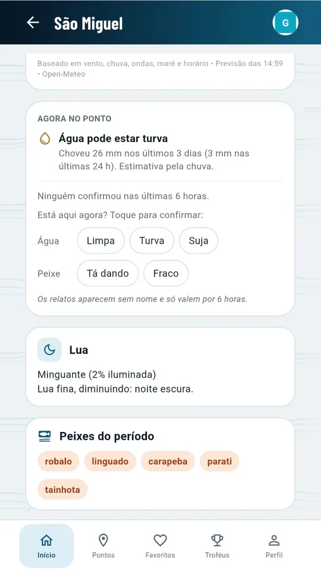

Qual é a boa de hoje?
Vento, chuva, maré e lua hora a hora, para cada ponto de praia, costão e rio.
Quero testarGratuito · Sem anúncios · Para Android
O que o app faz
- Previsão de pesca por horaJunta vento, chuva, ondas, maré e horário e mostra a hora boa e a hora de evitar.
- Maré, vento e chuvaMaré, vento, rajadas, chuva e pressão ao longo do dia.
- Fase da luaLua do dia e horário do nascer e do pôr do sol.
- Pontos de pescaPraias, costões e rios de Palhoça e Pinheira, Sul da Ilha, Leste e Lagoa e mais. Abre direto no Google Maps.
- Agora no pontoMostra se a água deve estar limpa, turva ou suja, e quem está lá pode confirmar.
- Sala de TroféusGuarde suas capturas com foto e seus pontos favoritos.
Telas do app



Arraste para o lado para ver mais.
Quero testar
O app está em teste no Android antes de sair para todo mundo na Google Play.
- Mande o seu GmailO mesmo que você usa na Play Store do celular.
- Aceite o conviteAbra o link de teste no celular e toque em “Participar do teste”.
- Instale pela Play StoreToque em “Baixar na Google Play” e instale como qualquer app.
Também dá para mandar o Gmail pelo WhatsApp do grupo.
É seguro?
- Vem da Google PlayVocê instala pela loja oficial, nunca por arquivo mandado no WhatsApp.
- Não usa sua localizaçãoO app não pede o GPS do celular.
- Gratuito e sem anúnciosNada para pagar e nenhuma propaganda.
- Seus dadosSó o e-mail para a conta, e dá para apagar a conta quando quiser. Veja a política de privacidade.
Quem fez
O Maré Boa é um projeto de uma estudante da PUC, feito em Floripa por quem pesca, para quem pesca. Sugestão de ponto ou achou algum erro? Escreva para mareboa.app@gmail.com.